Buttons: one flat look
You liked the flat grey close button and the flat grey chip. Each pair below is the same real page, with one change: shadow, outline and blur removed so the control matches those two. Pick per pair, or all at once.
The look you pointed at
Booking services: 38px grey close, grey chips, ink when selected.
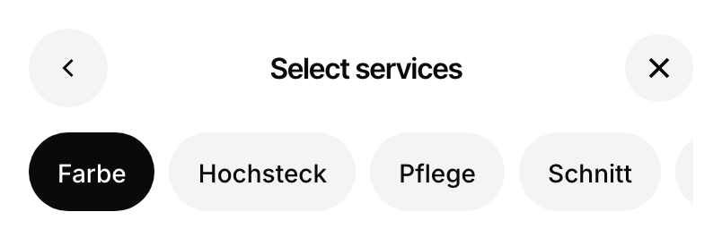
1. Category chips on home
Today: white with a shadow. Flat: grey, selected one ink (your "black everywhere").
This row was owner-locked earlier. It is shown only because you asked for every button to match.
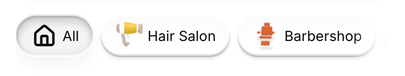
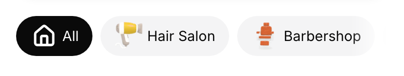
2. Heart on salon photos
Today: see-through white with blur and a thin outline. Flat: solid grey circle.
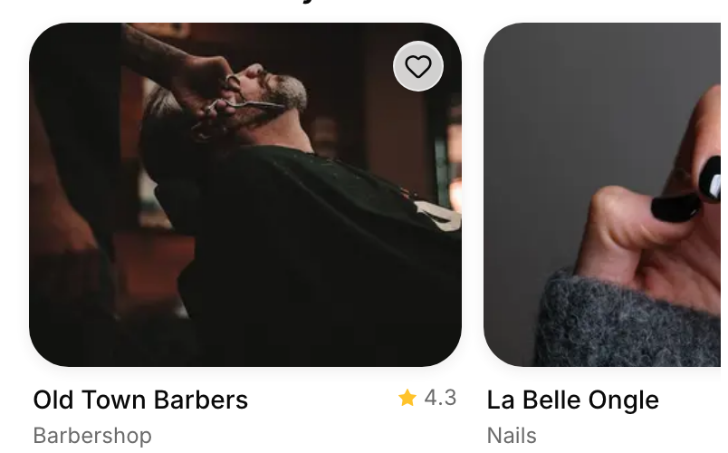
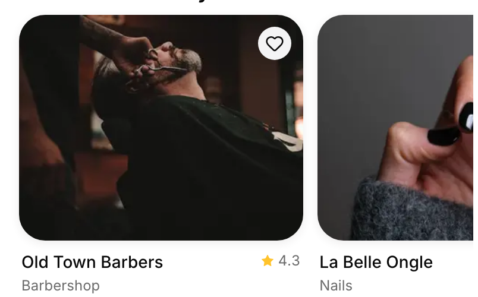
3. Add on booking services
Today: outline circle. Flat: grey circle, ink with a check once added.
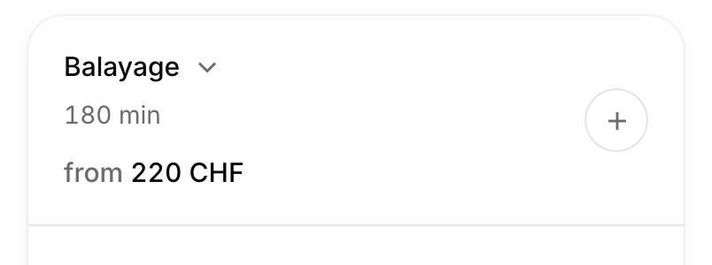
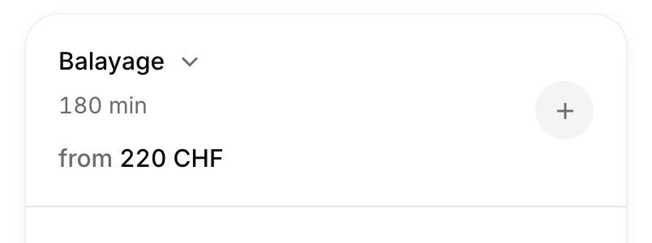
4. Share and heart on the salon photo
Already close to flat today (a 1px to 3px shadow and a light blur). The flat version removes those; the difference is small.
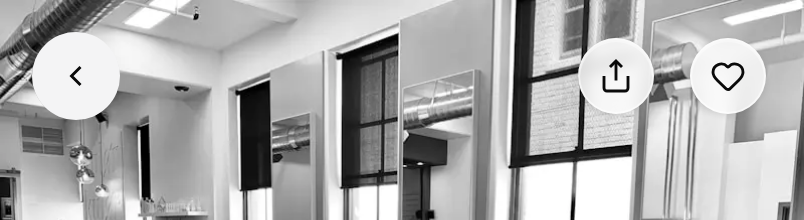
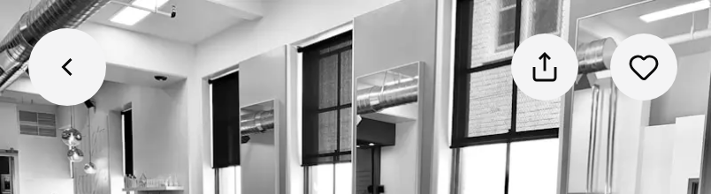
5. Map button on search
Ink, floating over the list. Flat removes its small shadow; the difference is small.
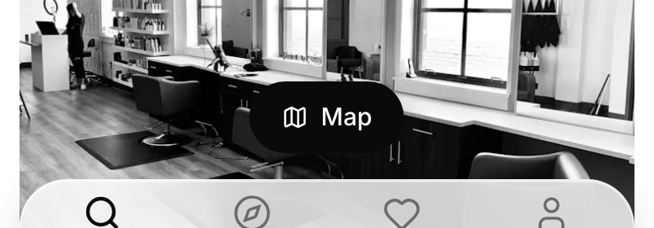
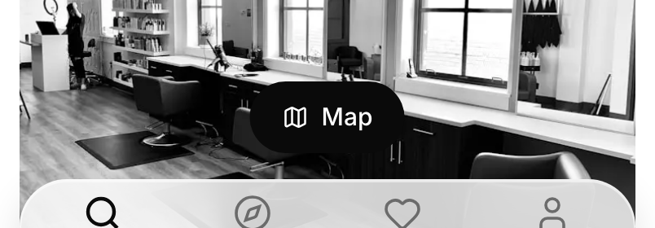